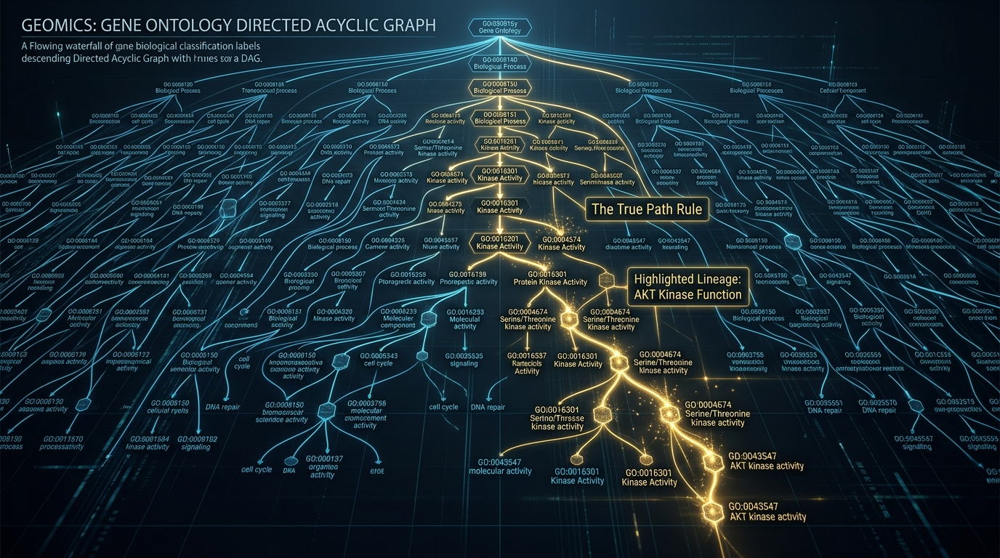
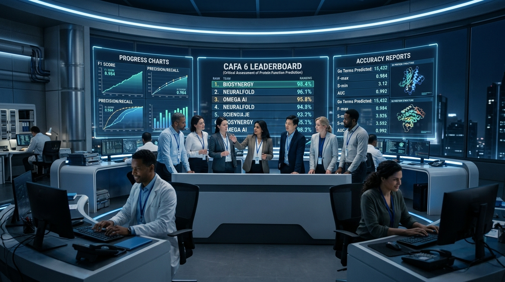

CAFA 6
Protein Function
Prediction Pipeline
## Executive Summary
To achieve state-of-the-art performance in the CAFA 6 Protein Function Prediction competition, our overall objective is to maximize the Information-Accretion (IA) weighted F1-measure ($F_{max}$) across three subontologies: Molecular Function (MF), Biological Process (BP), and Cellular Component (CC).
Synthesis of our parallel research domains reveals that standard classification metrics (like unweighted F1) are biologically fundamentally flawed. Success requires heavily prioritizing rare, highly specific Gene Ontology (GO) terms over generic ones. We will deploy a unified pipeline built on a shared Protein Language Model (PLM) backbone, utilizing dynamically weighted loss functions, and strictly enforcing the biological "True Path Rule" via hierarchical decoding.

## 1. High-Impact Strategic Insights
-
Target the CAFA 6 Scoring Metric Directly:
The competition evaluates on IA-weighted $F_{max}$. All three domains independently confirmed the necessity of mapping the GO Directed Acyclic Graph (DAG) to calculate Information Content ($IC = -\log(P(v|pa(v)))$. We will prioritize models that dynamically adjust probability thresholds to maximize this specific score across all three subontologies.
-
Knowledge-Tiered Evaluation is Critical:
The test set heavily penalizes generalization failure on "dark matter" proteins. Our evaluation framework must universally categorize targets into No-Knowledge (NK), Limited-Knowledge (LK), and Partial-Knowledge (PK) to simulate the future evaluation phases of CAFA 6 accurately.
-
Parameter-Free True Path Enforcement:
Instead of merely penalizing invalid hierarchical predictions during training, we must guarantee them at inference. The CC domain's proposed Hierarchical Max-Pooling Decoder will be adopted globally to ensure predictions logically flow down the GO DAG without biological contradictions.
## 2. Unified Architecture Strategy
(Cross-Domain Integration)
Rather than building three siloed models, we will consolidate the pipeline to optimize compute and structural coherence:
Unified Shared Backbone:
All domains are currently experimenting with different sizes of the ESM-2 Evolutionary Scale Model (8M, 35M, and 650M/ProtT5). We will standardize on a single ESM-2 650M shared encoder using Global Average Pooling. This eliminates redundant feature extraction, manages VRAM constraints (fitting within 16-24GB limits), and provides a sufficiently deep semantic baseline for all three classification heads.
Subontology-Specific Heads:
The shared ESM-2 embeddings will feed into three specialized Multi-Layer Perceptron (MLP) classification heads:
- MF Head: PLM-GCN Hybrid (integrating structure where available).
- BP Head: MLP with BatchNorm1d and specialized IA Loss.
- CC Head: HMM-ResNet (Hierarchical Multi-Modal Residual Network).
## 3. Critical Tensions & Contradictions to Resolve
Tension 1: Compute Fragmentation vs. Representation Depth.
Issue: The MF team recommends the massive 3B-parameter ProtT5-XL, while BP and CC built pipelines on highly constrained 8M and 35M ESM-2 variants.
Resolution: We will split the difference. A 3B-parameter model requires exorbitant scaling costs for multi-label tasks, while 8M is too shallow to capture deep evolutionary context. We will lock the pipeline to ESM-2 650M as our global standard, enabling rapid iteration while maintaining high representation capacity.
Tension 2: Missing Modalities (3D Structure Data).
Issue: The MF domain utilizes a Graph Convolutional Network (GCN) relying on 3D structural contact maps. However, CAFA 6 "No-Knowledge" targets frequently lack corresponding 3D structural data, which would typically crash a GCN pipeline.
Resolution: We will adopt the CC domain’s Modality Attention Module and Modality Dropout techniques across the entire network. This allows the MF head to ingest 3D structural data when available, but gracefully fallback to pure sequence embeddings via self-attention when structural inputs are missing.

## 4. Prioritized Next Steps
> Operationalizing findings ahead of CAFA 6 deadline
-
Consolidate the Data Pipeline: Centralize the calculation of IA
weights and the GO DAG relationships into a single master configuration file (
ia_weights_master.json) that all three domain heads reference. - Standardize the Embedding Engine: Deploy a unified ESM-2 (650M parameter) feature extraction microservice. Ensure variable-length sequences >1024 residues are handled via the MF domain's proposed sliding window strategy.
- Implement the Hierarchical Decoder: Port the CC domain's "Hierarchical Max-Pooling Decoder" to the MF and BP heads to strictly enforce the True Path Rule across the entire model output.
- Execute Tiered Validation: Run a temporal split (T0/T1) evaluation mimicking the CAFA 6 leaderboard logic. Generate automated performance reports specifically segmented by NK, LK, and PK target groups to pinpoint accuracy degradation on dark matter proteins.